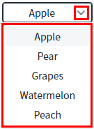
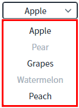
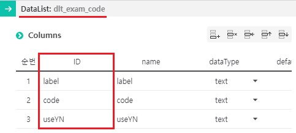
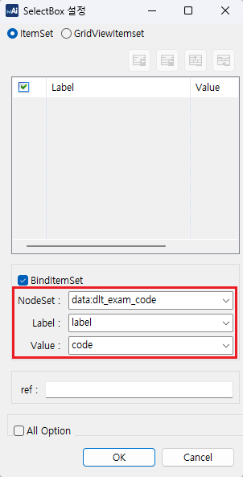
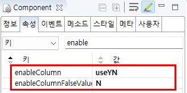

SelectBox의 특정 항목을 비활성화 하는 예제입니다. DataList와 SelectBox의 항목을 연결하여 설정할 수 있습니다. 비활성화된 항목은 사용자의 선택이 불가합니다.
모든 항목 활성화
출력된 목록 중 특정 항목을 비활성화 하기 - 속성으로 설정
출력된 목록 중 특정 항목을 비활성화 하기 - 스크립트로 설정
설정별로 구성된 컴포넌트의 목록은 하나의 DataList와 연결되어있습니다. 설정에 따라 출력된 목록을 비교합니다.
예제 영역 '(기본) 모든 항목 활성화'에서 테스트합니다.1
실행 결과를 확인합니다.
컴포넌트 오른쪽에 구성된 '목록 확장' 버튼을 클릭하여 항목을 확인합니다.
모든 항목이 활성화됩니다.
Image 1.브라우저(Chrome) 실행 예시

예제 영역 '비활성화 항목 지정 - 속성'에서 테스트합니다.1
실행 결과를 확인합니다.
항목 "Pear", "Watermelon"이 비활성화됩니다. 비활성화된 항목은 선택되지 않습니다.
Image 2.브라우저(Chrome) 실행 예시

예제 영역 '비활성화 항목 지정 - 스크립트'에서 테스트합니다.1
STEP 1: 출력된 목록을 확인합니다.
모든 항목이 활성화됩니다.
Image 3.브라우저(Chrome) 실행 예시
2
STEP 2: '항목 비활성화' 버튼을 클릭 합니다.
3
STEP 3: 실행 결과를 확인합니다.
항목 "Pear", "Watermelon"이 비활성화됩니다. 비활성화된 항목은 선택되지 않습니다.
Image 4.브라우저(Chrome) 실행 예시
이 기능은 컴포넌의 목록이 DataList와 연결되어야 사용할 수 있는 기능입니다.
컴포넌트의 목록과 연결할 DataList를 정의합니다.
DataList를 생성하고 ID를 'dlt_exam_code'로 할당합니다. 필수로 정의될 컬럼은 3가지로 아래와 같습니다. 컬럼의 ID는 환경에 맞게 정의할 수 있습니다.
label : 화면에 출력할 레이블
code : 화면에 출력할 레이블의 값
useYN : 비활성화할 조건의 값
(enableColumn 속성에 지정할 컬럼입니다. 이 컬럼의 값이 enableColumnFalseValue 속성에 정의한 값과 동일한 경우 해당 항목은 비활성화됩니다.)
Image 5.웹스퀘어 스튜디오 예시

생성한 DataList에서 사용할 데이터를 할당합니다. 예제에서는 화면이 로딩된 시점(scwin.onpageload)에 데이터를 할당하고 있습니다. 비활성화할 항목은 'useYN' 컬럼에 'N'을 정의합니다.
Example 1.Script
scwin.onpageload = function() { //DataList dlt_exam_code에 데이터 할당 dlt_exam_code.setJSON([ {"label":"Apple","code":"01","useYN":"Y"}, {"label":"Pear","code":"02","useYN":"N"}, {"label":"Grapes","code":"03","useYN":"Y"}, {"label":"Watermelon","code":"04","useYN":"N"}, {"label":"Peach","code":"05","useYN":"Y"} ]); };
스튜디오의 디자인 탭에서 컴포넌트를 더블 클릭하여 목록과 DataList를 연결합니다. (아래의 이미지를 참고하여 설정합니다)
Image 6.웹스퀘어 스튜디오의 '디자인' 탭 - DataList 연결하기 예시

1
속성을 설정합니다.
[필수] enableColumn="useYN"
DataList에 정의한 컬럼의 ID
[필수] enableColumnFalseValue="N"
비활성화할 항목의 조건
값이 여러개인 경우 , 로 구분하여 정의합니다. 이 컬럼에 아무런 값을 정의하지 않은 경우 기본 값은 0, false, FALSE, F 입니다.
Image 7.웹스퀘어 스튜디오의 Component View 예시

Example 2.Source
<!-- selectbox의 소스 본문 예시 --> <xf:select1 enableColumn="useYN" enableColumnFalseValue="N" id="sbx_exam2"> <xf:choices> <xf:itemset nodeset="data:dlt_exam_code"> <xf:label ref="label"></xf:label> <xf:value ref="code"></xf:value> </xf:itemset> </xf:choices> </xf:select1>
1
스크립트를 작성합니다.
Example 3.Script
//예제 파일의 스크립트 "scwin.btn_ex1_onclick"에 작성되어 있습니다. //항목 비활성화 컬럼 및 비활성화값 설정 - 목록과 연결된 DataList의 "useYN" 컬럼의 값이 "N"인 경우 비활성화합니다. sbx_exam3.setEnableColumn("useYN", "N"); //조건의 값이 여러개 인 경우 ,로 구분합니다. //목록과 연결된 DataList의 "useYN" 컬럼의 값이 "N" 또는 "Y" 인 경우 비활성화합니다. //sbx_exam3.setEnableColumn("useYN", "N,Y");
enableColumn
enableColumnFalseValue
setEnableColumn( columnId, enableColumnFalseValue )